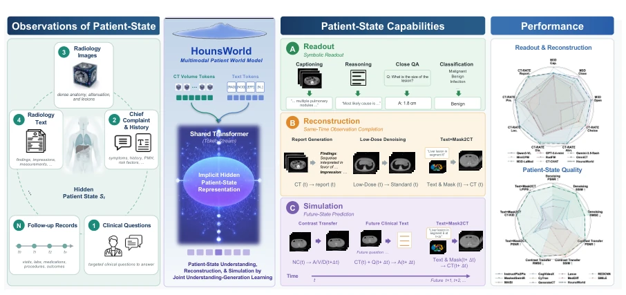
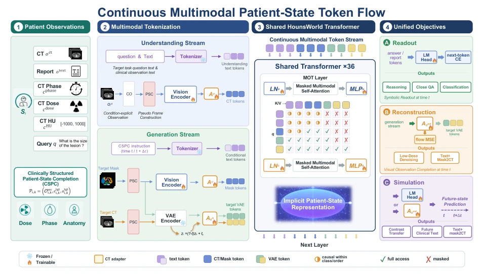
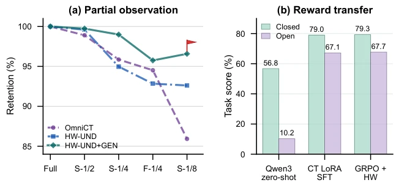
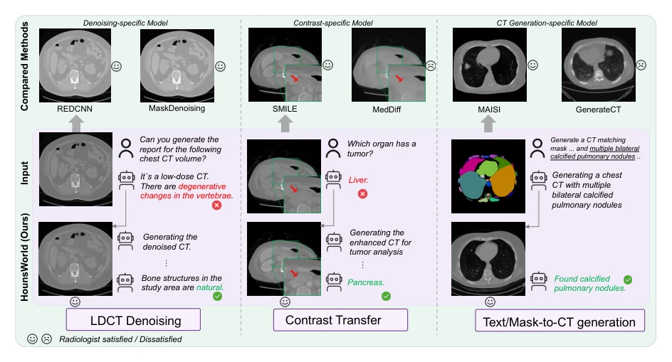
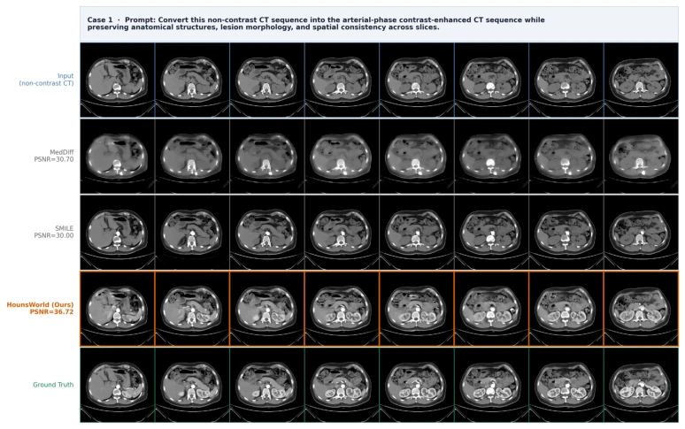
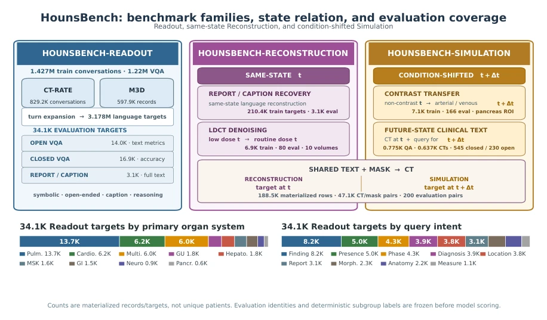
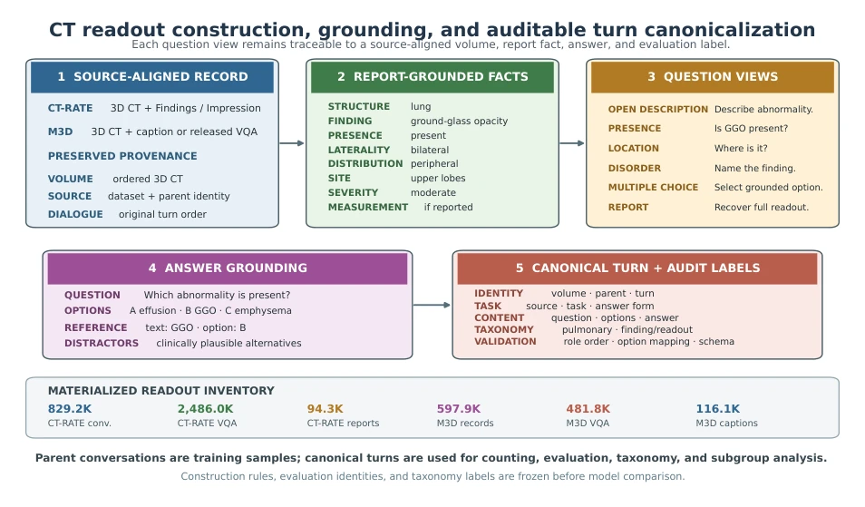
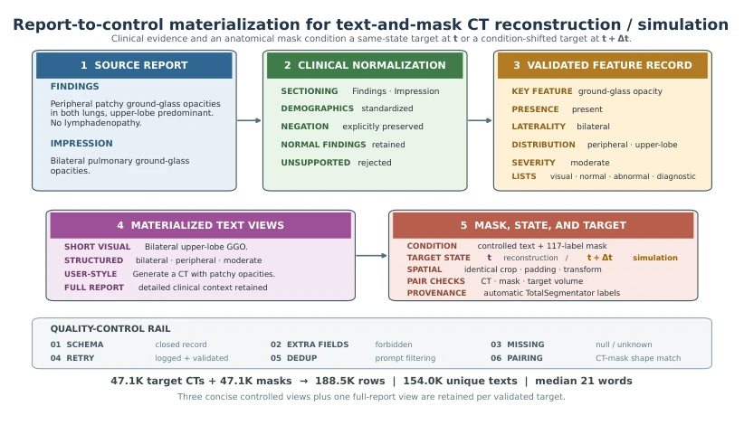
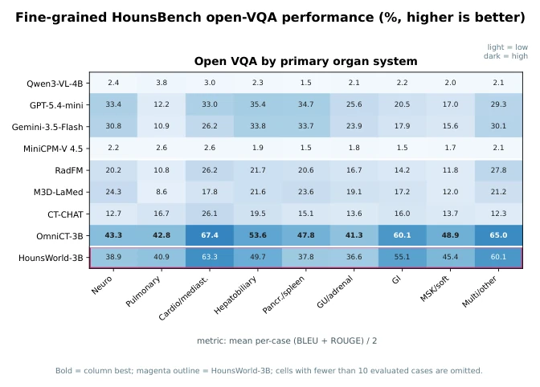
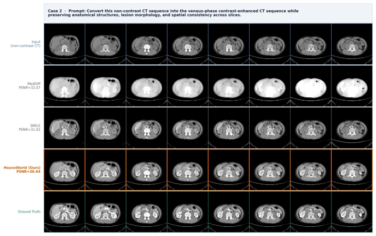

This paper attempts to unify medical CT reading, reconstruction, and simulation tasks under the framework of 'World Models', which sounds appealing, but is essentially a variant of multi-task Transformer. HounsWorld, as a 3B multimodal model, indeed packs VQA, report generation, and image generation into a shared latent state. Its greatest contribution is actually the HounsBench benchmark, which standardized fragmented tasks. However, the authors also admit this cannot replace long-term disease evolution prediction, and generated CTs cannot be directly used for diagnosis; this deserves a poor rating, after all, medical AI fears 'hallucinations' misleading clinical practice the most. The so-called 'World Model' here refers more to multi-task prediction under a shared latent state, rather than true physical dynamic simulation. Although performance is good, it is still far from true clinical intelligence, more of an engineering unification than a theoretical breakthrough.
研究动机Motivation
医疗 AI 长期受困于任务碎片化。现有的医疗 VLM 大多只关注理解（如 Li et al. (2023a); Moor et al. (2023)），或者把图像重建当作辅助任务。这种割裂导致模型无法学习统一的病人状态表示。世界模型（Ha and Schmidhuber, 2018）在决策领域成功，但在医疗领域尚未充分挖掘。本文指出临床智能本质是潜在状态推断，CT 和文本只是同一隐藏状态的不同观测。现有方法缺乏这种统一视角，导致监督信号分散，难以跨任务迁移。例如，CT-RATE 和 M3D 等数据集虽丰富了数据，但任务定义仍独立。统一建模能利用重建目标提供更稠密的约束，但目前多数系统仍优化为独立合成目标，未能充分利用互补观测。
Medical AI has long been trapped by task fragmentation. Existing medical VLMs mostly focus on understanding (e.g., Li et al. (2023a); Moor et al. (2023)), or treat image reconstruction as an auxiliary task. This fragmentation prevents models from learning a unified patient state representation. World Models (Ha and Schmidhuber, 2018) have succeeded in the decision-making domain but remain underexplored in the medical field. This paper points out that clinical intelligence is essentially latent state inference, where CT and text are merely different observations of the same hidden state. Existing methods lack this unified perspective, leading to dispersed supervision signals and difficulty in cross-task transfer. For example, although datasets like CT-RATE and M3D enrich the data, task definitions remain independent. Unified modeling can utilize reconstruction objectives to provide denser constraints, but currently most systems are still optimized for independent synthesis objectives, failing to fully utilize complementary observations.

Figure 1 HounsWorld learns a shared latent representation of patient state from multimodal observations, under which clinical readout, reconstruction, and simulation can all be formulated as state-dependent prediction problems.
The core is Clinically Structured Patient-State Completion (CSPC). The pipeline is divided into an understanding stream and a generation stream, sharing a Transformer. Innovations include: 1) Conditional explicit observation, using HU window, dose, and phase as conditional inputs to reduce ambiguity; 2) Pseudo-frame Construction (PSC), packing 3D voxels into RGB channels to adapt to pre-trained interfaces; 3) Residual adapter, zero-initialized to retain pre-trained semantics. Training is divided into two stages: first adapting the CT interface, then joint fine-tuning. The output end supports symbolic reading, report reconstruction, and conditional CT generation (e.g., denoising, contrast enhancement). The model jointly optimizes language reading and conditional CT generation through Joint Understanding-Generation Learning, utilizing Flow Matching to complete CT completion in the VAE latent space. This design enables a single model to handle state prediction under different observation conditions, rather than independently training multiple specialized models.

Figure 2 HounsWorld learns from complementary observations of a latent patient state. Clinically Structured Patient- State Completion preserves patient correspondence while changing the current or requested subsequent observation condition, jointly constraining clinical readout, text completion, and CT completion.
Evaluated based on HounsBench, containing three types of tasks: reading, reconstruction, and simulation. Baselines include OmniCT, Qwen3-VL, and specialized generation models (e.g., InstructPix2Pix). HounsWorld significantly outperforms generation models in PSNR on reconstruction and simulation tasks, and ranks second only to OmniCT on reading tasks. Ablation studies show CSPC can improve reading robustness, especially under sparse observations. Interestingly, HounsWorld can also serve as a Reward Model to improve the RL training effect of Qwen3-VL, proving that the latent state structure is transferable. In contrast transfer tasks, HounsWorld can accurately predict subsequent phases, outperforming MedDiff and SMILE. Although slightly inferior to specialized models on specific metrics, as a unified 3B model, its cost-performance and generalization ability are worthy of affirmation.

Figure 3 Complementary ablations. (a) Report-quality retention under uniformly sparse (S) or central field-of-view (F) observations; CSPC degrades most gracefully. (b) Closed- and open-task transfer to an independent Qwen3-VL policy; Reinforcement learning improves using HounsWorld (HW) as rewards over zero-shot and SFT.

Figure 4 Qualitative consistency across condition-specific observations. The top row shows task-specific comparators. Left: denoising revises the inferred finding from vertebral degeneration to normal bone. Center: a predicted post- contrast observation separates vessels from the pancreatic lesion (red arrows) and shifts localization from liver to pancreas. Right: text-and-mask conditioning instantiates multiple bilateral calcified pulmonary nodules that remain identifiable in the synthesized CT.

Figure 9 Arterial-phase HounsBench-Simulation at t + ∆t, Case 1. Rows show the non-contrast input at t, MedDiff, SMILE, HounsWorld, and the paired arterial-phase ground truth. MedDiff produces diffuse intensity amplification, while SMILE enhances the arterial lumen but under-enhances liver and kidney parenchyma. Displayed PSNR values are volume-level ROI-PSNR.
其他图片Other Figures

Figure 5 Organization and scale of HounsBench, aligned with the main-paper taxonomy. The three equal-level panels summarize HounsBench-Readout, HounsBench-Reconstruction at t, and HounsBench-Simulation at t + ∆t. The shared text-and-mask-to-CT rail explicitly spans reconstruction and simulation. The lower bars report the complete 34.1K Readout evaluation distribution by primary organ system and query intent. Values use K units for compactness; conversation, target, paired-CT, future-text-QA, and volume counts denote distinct materialization units rather than patient counts.

Figure 6 Readout construction and canonicalization. A source-aligned record is decomposed into report-grounded fact fields, rendered into complementary question views, paired with grounded answers and plausible distractors, and materialized as an auditable canonical turn. The example is schematic but uses the actual record fields. Clinical-fact and question construction follows the OmniCT data protocol Lin et al. (2026); HounsBench additionally preserves parent identities, canonical turn IDs, deterministic subgroup labels, and validation outcomes.

Figure 7 Report-to-control materialization for text-and-mask-conditioned CT reconstruction/simulation. The upper path shows report sectioning, normalization, and a concrete structured-feature example; the lower path shows four retained text views, spatial pairing with a 117-label TotalSegmentator mask, the highlighted target-state choice t/t + ∆t, and the validation rail. Counts at the bottom distinguish target CTs, masks, materialized rows, and unique texts.

Figure 8 Fine-grained open-VQA performance grouped by primary organ system and scored with per-case (BLEU + ROUGE)/2. Bold cells are column maxima; the outlined row is HounsWorld. Values are percentages, and groups with fewer than ten evaluated examples are omitted. These descriptive diagnostics are not the main-paper composite.

Figure 10 Venous-phase HounsBench-Simulation at t + ∆t, Case 2. Rows follow Figure 9. MedDiff yields a spatially diffuse, nearly saturated response; SMILE partially enhances the liver but largely misses the renal response. HounsWorld produces more coordinated enhancement across vascular and parenchymal structures. Displayed PSNR values are volume-level ROI-PSNR.